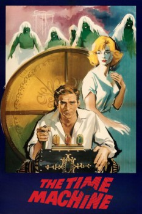

The Time Machine (1960)


You Will Orbit into the Fantastic Future!

Country:United States, 103 minutes
Spoken languages:English
Genres:Thriller, Adventure, Fantasy, Sci-Fi, Romance
Director(s):George Pal
Writer(s):H. G. Wells, David Duncan
Video Codec:Unknown
Number: 3629
IMDb Rating:

Certification:
Storyline:
A Victorian Englishman travels to the far future and finds that humanity has divided into two hostile species.
Cast:
Rod Taylor (as H. George Wells), Alan Young (as David Filby / James Filby), Yvette Mimieux (as Weena), Sebastian Cabot (as Dr. Philip Hilyer), Tom Helmore (as Anthony Bridewell)
Medium: Media file,
Location: D:\The Time Machine\The Time Machine (1960).mp4
Loaned: No
Aspect ratio: Unknown